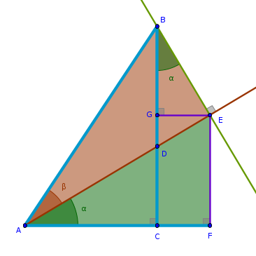
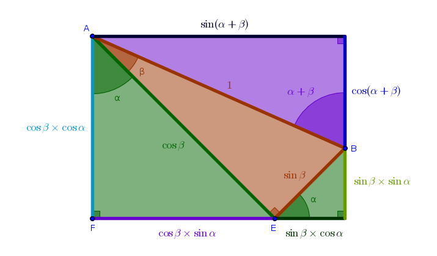

Problem
Express the cosine of a composite angle \(\alpha + \beta\) in terms of trigonometric functions of primitive angles \(\alpha\) and \(\beta\).
Solution
In the previous chapter we have made a modest attempt at showing how an identity can be derived at via a series of trial and error geometric constructions. However, in this chapter we will not be as verbose. Our goal here is to see if the arrangement that worked for the sine will also work for the cosine.
As such:
By definition we have:
$$\cos (\alpha + \beta) = \frac {AC}{AB} =$$ $$\frac {AF - CF}{AB} =$$ $$\frac {AF - GE}{AB} =$$ $$\frac {AF}{AB} - \frac {GE}{AB}$$\(AF\) is a side of the right triangle \(\triangle AFE\) and \(AB\) is a hypotenuse of the right triangle \(\triangle AEB\) and these two right triangles share \(AE\):
$$\frac {AF}{AB} = \frac {AF}{AB} \times 1 =$$ $$\frac {AF}{AB} \times \frac {AE}{AE} =$$ $$\frac {AF}{AE} \times \frac {AE}{AB}$$From \(\triangle AFE\) we have:
$$\frac {AF}{AE} = \cos \alpha$$From \(\triangle AEB\) we have:
$$\frac {AE}{AB} = \cos \beta$$Hence:
$$\frac {AF}{AB} = \cos \alpha \cos \beta$$\(GE\) is a side of the right triangle \(\triangle BGE\) and \(AB\) is a hypotenuse of the right triangle \(\triangle AEB\) and these two right triangles share \(BE\):
$$\frac {GE}{AB} = \frac {GE}{AB} \times 1 =$$ $$\frac {GE}{AB} \times \frac {BE}{BE} =$$ $$\frac {BE}{AB} \times \frac {GE}{BE}$$From \(\triangle AEB\) we have:
$$\frac {BE}{AB} = \sin \beta$$From \(\triangle BGE\) we have:
$$\frac {GE}{BE} = \sin \alpha$$Hence:
$$\frac {GE}{AB} = \sin \alpha \sin \beta$$and:
$$\bbox[#e8e8e8,3pt]{\cos (\alpha + \beta) = \cos \alpha \cos \beta - \sin \alpha \sin \beta}$$or geometrically:
\(\blacksquare\)